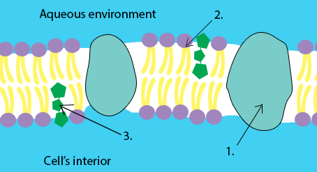

IELTS Academic Reading Test 9. Section 3
This is the final section of IELTS Reading test #9. After its completion, you will see your IELTS Reading score for this test.
READING PASSAGE 3
You should spend about 20 minutes on Questions 28-40, which are based on Reading Passage 3 below.
Structure and function of cell membranes
(A) Human body is made up of millions of cells - little building blocks of life. Each cell contains many functional subunits (organelles) that enable its proper functioning and is protected from the external environment by a cell membrane. While structure and function of organelles are extensively covered in various biology courses, the importance of study of cell membranes is often underrated. This article is dedicated to provide a short introduction into the basic functions and anatomy of a cell membrane.
(B) Cell membranes protect and organize cells. Most importantly they serve as barriers, discriminating the cell’s interior from the outer milieu. Because cells always exist in aqueous environment their membranes should be structured in such way so they do not solve in water. This function is ideally carried by special chemical molecules - phospholipids. These molecules are constructed from two parts: tails made up of 2 molecules of fat that ‘avoid’ water and heads that have an affinity for water. For this specific behaviour the phospholipid’s tails are called hydrophobic (‘hydro’ means water and ‘phobia’ means fear) and heads are called hydrophilic (‘philos’ means love). When phospholipids are added to water, they self-assemble into double-layered structures, shielding their hydrophobic portions from water and exposing their hydrophilic portions to the environment. This phospholipid bilayer may resemble a sandwich, where phospholipid heads are bread rolls and tails are the sandwich filling.
(C) In addition to lipids, membranes are loaded with proteins. They usually go through the lipid bilayer and are exposed to both aqueous environment and cell's interior. In fact, proteins account for roughly half the mass of most cellular membranes. They make the membrane semi-permeable, which means that some molecules can diffuse across the lipid bilayer but others cannot. Small hydrophobic molecules and gases like oxygen and carbon dioxide cross membranes rapidly. Small molecules, such as water and ethanol, can also pass through membranes, but they do so more slowly. On the other hand, cell membranes restrict diffusion of highly charged molecules, such as ions, and large molecules, such as sugars and amino acids. The passage of these molecules relies on specific transport proteins embedded in the membrane.
(D) Membrane transport proteins are specific and selective for the molecules they move, and they often use energy to enhance passage. Also, these proteins transport some nutrients against the concentration gradient, which requires additional energy. The ability to maintain concentration gradients and sometimes move materials against them is vital to cell health and maintenance. Thanks to membrane barriers and transport proteins, the cell can accumulate nutrients in higher concentrations than exist in the environment and, conversely, dispose of waste products.
(E) Other membrane-embedded proteins have communication-related jobs. Large molecules from the extracellular environment, such as hormones or immune mediators, bind to the receptor proteins on the cell membrane. Such binding causes a conformational change in the protein that transmits a signal to intracellular messenger molecules. Like transport proteins, receptor proteins are specific and selective for the molecules they bind.
(F) Another important type of membrane’s components are cholesterol molecules, which account for about 20 percent of the lipids in animal cell plasma membranes. However, cholesterol is not present in bacterial membranes or mitochondrial membranes. The cholesterol molecules are embedded in place of phospholipid molecules and help to regulate the stiffness of membranes. To function properly, the cell membrane should be in fluid state. Cholesterol reduces membrane fluidity at moderate temperatures by reducing the moving of phospholipids. But at low temperatures, it hinders solidification by disrupting the regular packing of phospholipids.
Questions 28-30
Label the diagram below.
Write NO MORE THAN ONE WORD from the passage for each answer. Do not write the articles.
Which elements of cell membrane correspond to the numbers in the diagram?

28. 29. 30.
Questions 31-35
Reading Passage 3 has six paragraphs, A-F.
Which paragraph contains the following information?
Write the correct letter, A–F, in boxes 31–35 on your answer sheet.
31. Specific proteins transport nutrients from the external environment against the concentration gradient.
32. The barrier function of cell membranes is supported by a bilayer of phospholipids.
33. The level of membrane fluidity is regulated by cholesterol molecules.
34. The importance of cell membranes are often underestimated.
35. Proteins make the membrane semi-permeable.
Questions 36–40
Complete the summary below.
Choose ONLY ONE WORD from the passage for each answer.
Write your answers in boxes 36–40 on your answer sheet.
Cell membranes protect cells and organize their activities. The first main function of cell membrane - barrier function - is carried by phospholipids. These molecules don’t solve in water and, thus, are ideal for cells that always exist in 36. environment.
In addition to lipids, membranes are loaded with 37. that make the membrane 38. , which means that some molecules can diffuse across the lipid bilayer but others cannot. One of the most important types of membrane proteins are 39. proteins and receptor proteins.
The last type of membrane elements are cholesterol molecules, which are embedded in place of 40. molecules and help to regulate the stiffness of membranes.